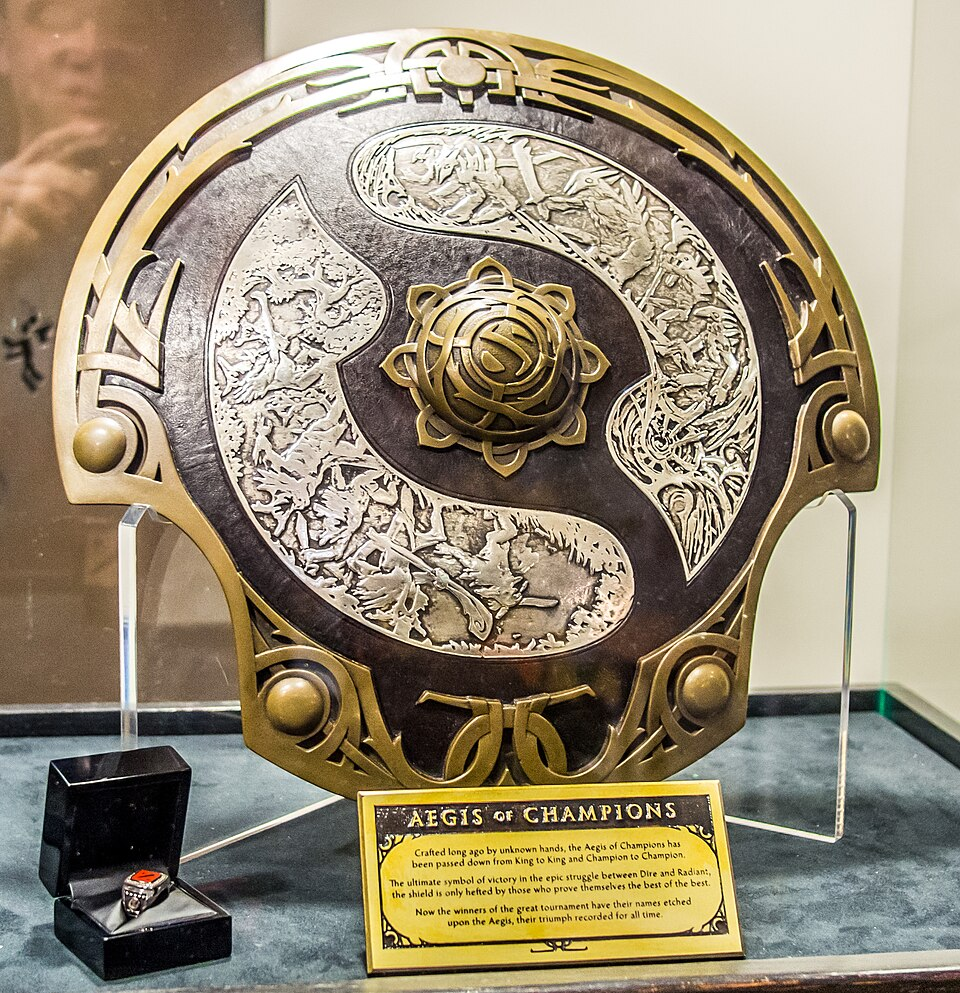
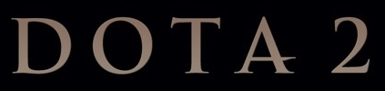
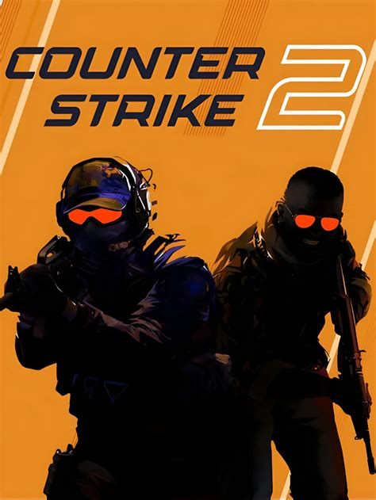
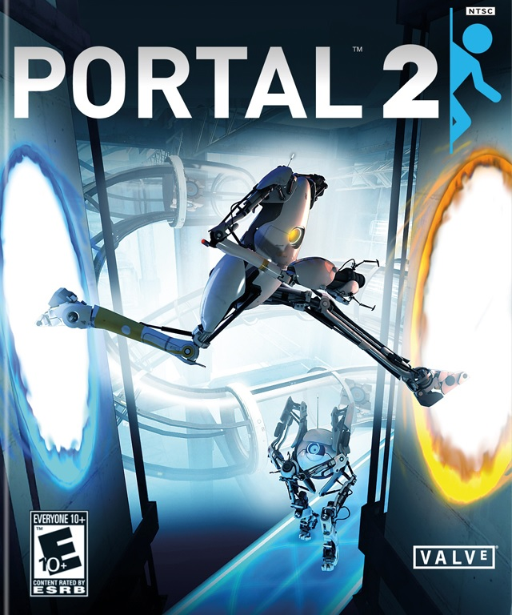
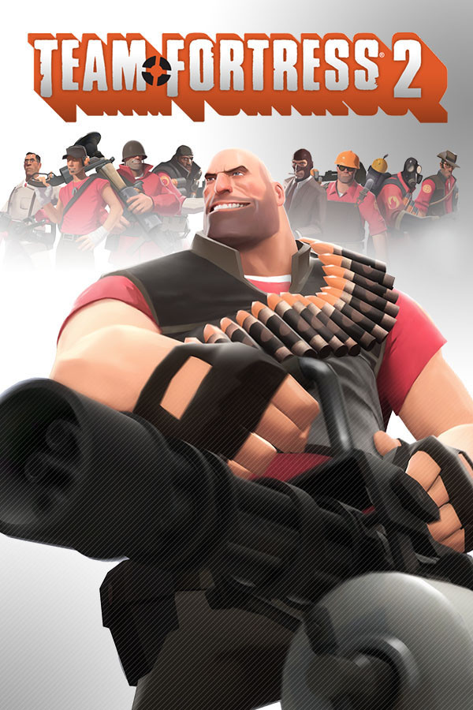
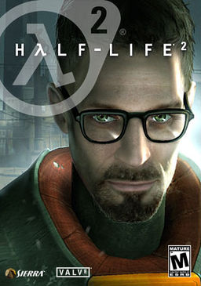
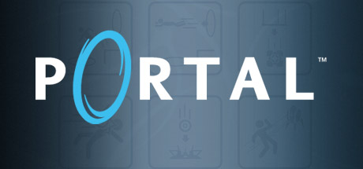
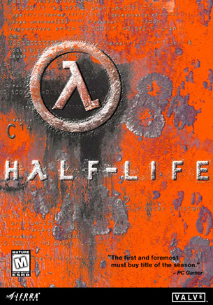
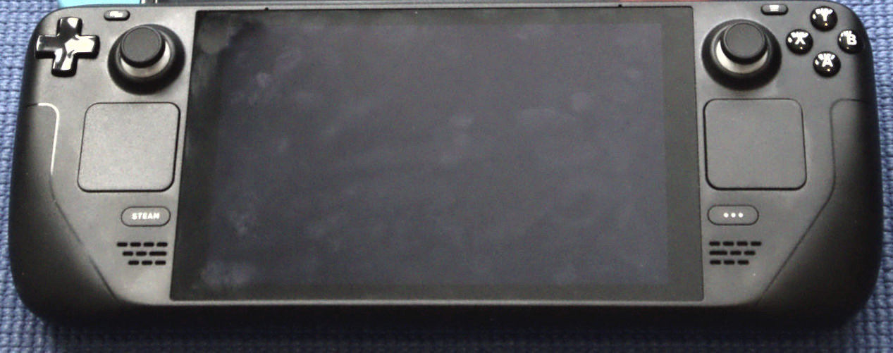
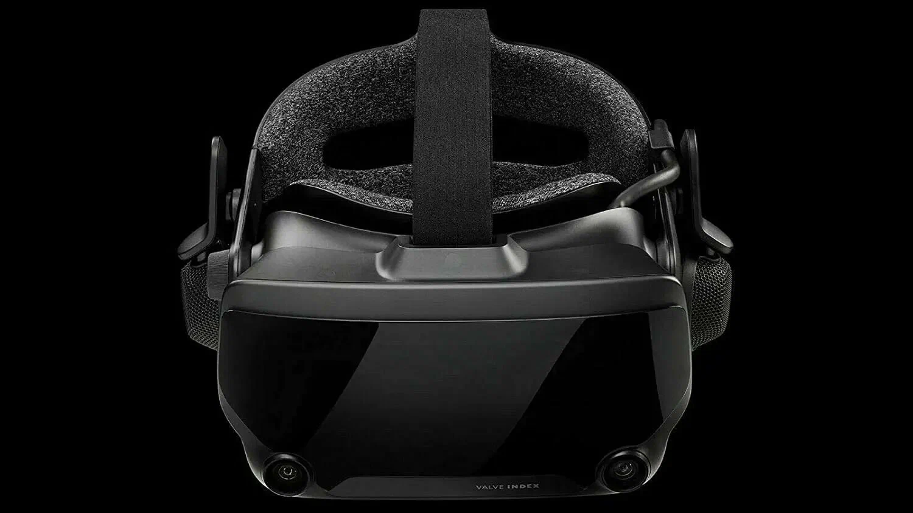

🏢
Основание
24 августа 1996 года Гейбом Новеллом и Майком Харрингтоном — бывшими сотрудниками Microsoft.
С 1996 года
Создатель Dota 2, Counter-Strike 2 и платформы Steam — компании, определяющей современный киберспорт и digital-дистрибуцию игр.
Смотреть игрыValve Corporation — американская частная компания-разработчик и издатель компьютерных игр, оператор платформы Steam и организатор крупнейших киберспортивных турниров.
24 августа 1996 года Гейбом Новеллом и Майком Харрингтоном — бывшими сотрудниками Microsoft.
Valve проводит The International по Dota 2 и Major-турниры по CS2 — крупнейшие события в мире киберспорта.
Плоская структура управления, ставка на качество вместо количества, свобода разработчиков.

Гейб Новелл и Майк Харрингтон покидают Microsoft и основывают Valve L.L.C.
Дебютный шутер совершает революцию в жанре и получает десятки наград «Игра года».
Любительский мод превращается в самостоятельную игру и будущую киберспортивную дисциплину №1.
Valve создаёт первую крупную цифровую платформу для распространения игр.
Новая технология физики и повествования, ставшая основой для многих игр.
Portal, Team Fortress 2 и эпизоды Half-Life 2 в одном сборнике — легендарный релиз.
MOBA становится киберспортивной дисциплиной №1 с крупнейшими призовыми фондами в истории.
Возвращение вселенной Half-Life в формате VR-игры.
Портативная игровая консоль от Valve на базе SteamOS.
Классический шутер переезжает на движок Source 2.
Проекты Valve, определившие киберспорт и развитие индустрии.

2013
Главная MOBA планеты. Киберспорт №1 с рекордными призовыми фондами The International.
Топ-1 по онлайну
2023
Легендарный тактический шутер на движке Source 2. Киберспортивная классика №1 в мире.
Киберспорт №1
2011
Кооператив с ATLAS и P-body, возвращение GLaDOS и Уитли.

2007
Командный шутер с 9 классами и уникальным стилем. Живёт уже почти 20 лет.

2004
Физика, гравитационная пушка и Сити 17. Технологический прорыв эпохи.

2007
Портальная пушка, GLaDOS и фраза «Торт — ложь». Головоломка на все времена.

1998
Гордон Фримен, Чёрная Меза и монтировка. Революция в сюжетных шутерах.
Steam — крупнейшая в мире цифровая платформа для ПК-игр. Именно через неё запускаются Dota 2 и CS2, а также миллионы других проектов.


Компания выпускает не только игры, но и собственное «железо»: VR-шлем Valve Index (2019) и портативную консоль Steam Deck (2022).
призовой фонд The International по Dota 2 (2021)
игроков в Dota 2 и CS2 ежемесячно
год основания компании Valve
игр в каталоге Steam